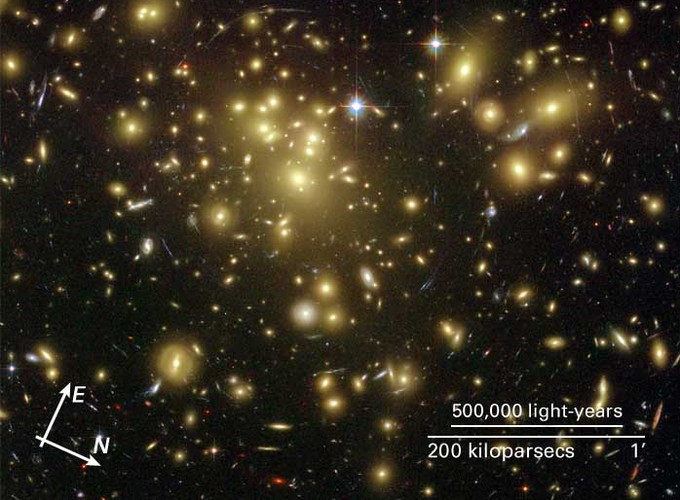

- [1703.00013] How Dark Matter Came to Matter
- [1305.1611] Matrix element analyses of dark matter scattering and annihilation
- [1702.02430] Review of LHC Dark Matter Searches
- [1703.07364] Waning of WIMP
- [1001.3651] Supersymmetric Dark Matter Candidates
- [1002.1912] Direct detection of WIMPs
- [1002.3828] Non-WIMP Candidates
- [1301.0021] On the likely dominance of WIMP annihilation to fermion pair + $W$/$Z$ (and implication for indirect detection)
- [1301.0952] TASI 2012 Lectures on Astrophysical Probes of Dark Matter
- [astro-ph/9904251] The Early History of Dark Matter
- [hep-ph/0301106] Accurate relic densities with neutralino, chargino and sfermion coannihilations in mSUGRA
- [hep-ph/0404175] Particle Dark Matter: Evidence, Candidates and Constraints
- [hep-ph/9207234] The Neutralino Relic Density in Minimal $N=1$ Supergravity
- [hep-ph/9506380] Supersymmetric Dark Matter
- [hep-ph/9704361] Neutralino Relic Density including Coannihilations
Image from Hubble under public domain
Dark matter

Image from Hubble under public domain